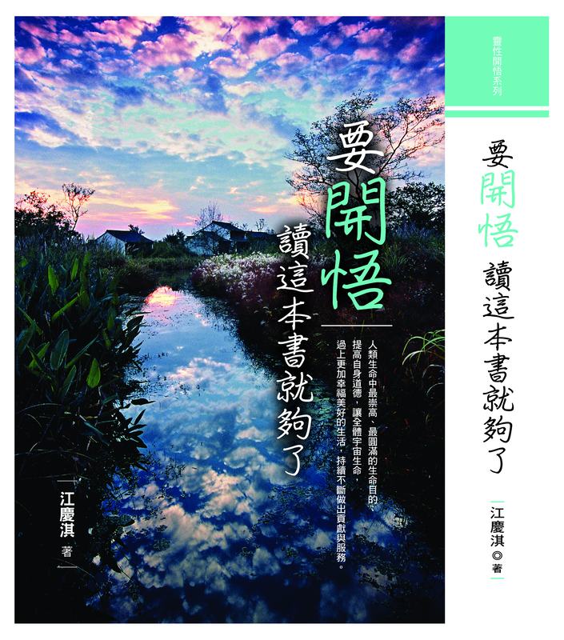

覺醒經典 壹

《要開悟，讀這本書就夠了》
本書是江慶淇老師與學員間的哲理傳授與談話紀錄整理而成，讓「開悟」這個幾千年來的神祕生命議題，不再讓人琢磨不透而有跡可循，是一份開悟者完整傳授本源神祕天理，卻又讓人容易實踐的經典之作。《書經・大禹謨》：「惟精惟一，允執厥中」我們唯一能把握的就是自己的「內在心魂」，也就是本源所賦予我們的「靈體」。本源允許我們的靈性永遠不斷進化，我們在人間唯一能把握的，就是我們存在的「內在心魂靈體」。
於書頁翻動之間，照見本源之光
在文字的靜謐中，與覺醒相遇
文字是覺醒者留下的足跡，是靈性在路上最溫柔的陪伴。江慶淇老師將多年來的體悟與傳授，凝練為兩本珍貴的著作，無償提供給所有尋道者下載閱讀。無論您是初識靈性之路，或已行走多時，這兩本書都將成為您前行時最真實的依靠。
以下為您列出兩本電子書的封面與全文下載連結，請依您的需要點擊按鈕即可下載 PDF 檔案。建議您先由封面認識每本書的精神，再深入全文，細細品味江老師字裡行間所傳遞的本源智慧。

本書是江慶淇老師與學員間的哲理傳授與談話紀錄整理而成，讓「開悟」這個幾千年來的神祕生命議題，不再讓人琢磨不透而有跡可循，是一份開悟者完整傳授本源神祕天理，卻又讓人容易實踐的經典之作。《書經・大禹謨》：「惟精惟一，允執厥中」我們唯一能把握的就是自己的「內在心魂」，也就是本源所賦予我們的「靈體」。本源允許我們的靈性永遠不斷進化，我們在人間唯一能把握的，就是我們存在的「內在心魂靈體」。
這本以手札形式紀錄寫出，有關靈性開悟覺醒的書，是作者在歷經沉靜而見純粹後，真實的搭上「生命之流」和「真理之流」，本然的抹去一切經歷和醫學博士的學識背景，「重生」回歸一位男人本然的角色（人子、人之兄弟姊妹、人夫、人父、人之友、人師……），感恩的從事最平凡而踏實的工作，真實的擔負「養家」照顧妻子小孩的責任，把生命裡超越全部的「愛」和「美」無條獻給「家人」、「生活」和「工作」；以「喜悅」、「感恩」和「愛」，緊緊的包裹著生命裡的一切。
惟精惟一，允執厥中
我們唯一能把握的，就是自己的「內在心魂靈體」